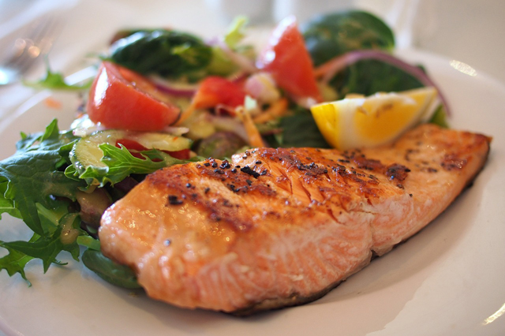

Salmon Meuniere

Juicy, crispy, and healthy salmon recipe akin to Legends of Zelda: Breath of the Wild. (Gives you an extra heart too! Allegedly.)
Ingredients
- 2 8 oz portions salmon
- 1-2 tablespoons kosher salt
- 1-2 tablespoons pepper
- 2 tablespoons oil
- 1 tablespoon unsalted butter
- 1/4 cup flour
- 3/4 tablespoon lemon juice (juice from half a small lemon)
- 5 tablespoons unsalted butter
- 2-3 tablespoons chopped parsley
- 1 large garlic clove, smashed
Steps
- Warm the salmon to room temperature.
- Using the blade of your knife pull the leaves off the parsley by gently but firmly running the blade along the stems. Roughly chop into small pieces.
- Cut the lemon and juice one half, making sure not to get any seeds in the juice.
- Using the flat of a knife blade smash the garlic and remove the skin.
- Pat the salmon dry and season with kosher salt and pepper.
- Heat a pan over medium with the oil.
- When the oil is hot add the butter. Be careful, as this will splatter and pop until all the water is cooked out of the butter.
- When the butter mixture starts to calm down add the flour to a plate and dredge the salmon by patting it into the flour. Immediately add the salmon to the pan, skin down, by laying it away from you.
- Cook the salmon for 3-4 minutes, turn, and cook for another 3 minutes.
- Remove the salmon and cover with foil.
- Acting quickly pour the remaining oil mixture out of the pan and wipe out with paper towels. Be careful not to burn yourself and use proper heat proof equipment.
- Add the 5 tablespoons of butter and garlic to the pan and allow to melt and brown, about 2-3 minutes.
- Remove the pan from the heat and add the lemon and parsley. Again, use caution when you add the lemon because it may splatter and pop.
- Immediately pour over the salmon filets and serve.